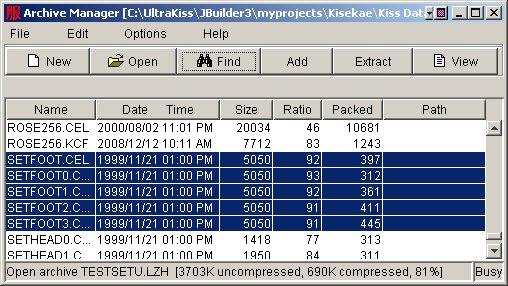

Welcome to the UltraKiss Archive Manager documentation. To open an online book, choose a book from the Contents page in the upper left of the Help Viewer. Click the book icon to expand the book topics. Then, click a topic to view it.
The Archive Manager is a full featured data compression and extraction program designed to manipulate KiSS data sets stored in LHA, ZIP, or JAR format archive files. This online Help document provides reference material for the various commands and options available within the Archive Manager program.
Archive files are compressed files. The information in an archive file is encoded using data compression algorithms that are designed to reduce the amount of space required to store the data. To compress data you use the Archive Manager to create a new compressed file and add data elements to this file. To uncompress data you use the Archive Manager to read a compressed file and extract the compressed data to a file directory.
Archive files are like file directories. Each archive file contains many file elements. Archive files are ideal for KiSS data sets because these sets are composed of many different elements including configuration files, palette files, image files and so on. Compressed file archives are a simple and easy way to encapsulate a KiSS data set for packaging and distribution to other users.
However, archive files differ from file directories in that archive files must be completely rewritten whenever any element of the archive is changed. UltraKiss knows how to read archive files and will automatically uncompress KiSS data sets in LZH, ZIP or JAR format when they are loaded. UltraKiss will also compress file elements and add them to the KiSS archive file when they are saved, however for large archive files this file updating can take time. It can be more effective to uncompress a KiSS archive before using UltraKiss particularly if many edit changes are planned. UltraKiss can read data sets from standard file directories. If a file is referenced from a standard directory then only the changed element need be written.
Note that compressing files is not always useful. Many standard image formats are already compressed as part of their representation and recompressing compressed files is not effective.
The main Archive Manager screen is shown in Figure 1. The Archive Manager contains a standard menu bar of functions to manipulate an archive file and a toolbar for easy access to common menu functions. The elements contained within an open archive file are listed in the main area of the screen. These elements have names, dates, uncompressed sizes, compression ratios, compressed sizes, and internal directory path information useful for reconstructing a directory hierarchy when the archive file is uncompressed.
Figure 1.
Figure 2 shows the Archive Manager after a compressed file has been opened with the File-Open command. The status line at the bottom of the window provides overall compression information for the file. The file TESTSET.LZH has been compressed to about 20% of its original size. This is a significant savings in space for distribution of the file to other users.

Figure 2.
The Archive Manager supports archive files that contain both absolute and relative path names. If file elements within the archive were saved with path names then these elements can be restored to the appropriate file directories on extraction. For further information see the Add Functions document and the Extract Functions document.
To add new file elements to the archive file you use the Edit-Add command. Figure 3 shows the Add dialog for selecting the new file element to be added to the archive. Under normal circumstances you would simply select a file element and add this to the archive file, replacing any existing element of the same name within the archive. For further information and a detailed description of the Add screen options, see the Add Functions document.

Figure 3.
To extract file elements from the archive file you use the Edit-Extract command. Figure 4 shows the Extract dialog. This is used to select the archive file element to be extracted from the archive. Under normal circumstances you would simply extract all file elements from the archive and write them into a file directory, replacing any existing element of the same name. For further information and a detailed description of the Extract screen options, see the Extract Functions document.

Figure 4.
There are times when you will seek to find a particular element or set of elements within the archive file. The Edit-Find command can be used to show a selection dialog in which you can enter the name of a file element, or partial name of an element. Figure 5 is an example of a Find dialog.
Figure 5.
This example has chosen to find all element files in the archive file TESTSET.LZH beginning with the characters 'set' and containing any file extension. The results of the Find operation are shown in Figure 6. All elements satisfying the search criteria have been selected, as shown. These selected elements can now be individually extracted or deleted from the archive file.

Figure 6.
Next Document: Menu Commands
Copyright (c) 2002-2023 William Miles